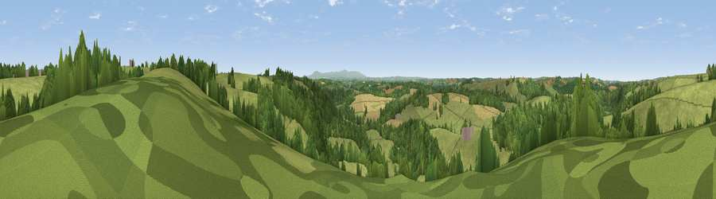

Viewpoint near Beaford
#24451 in England · top 45% of its area beats it · near BeafordThe view, rendered

A 360° render of this exact spot computed from the terrain model, tree cover and land cover — summer colours, afternoon light, calibrated against photographs of famous viewpoints. Real trees, hedges and buildings will differ in detail.
The panorama
Grey silhouette: terrain skyline in each direction (720 bearings, Earth curvature and refraction included). Dashed green: skyline with trees (+15 m) and buildings (+8 m) as obstacles. Blue strip: how far the ground is visible on each bearing.
Where the view opens
Wedge length = distance to the farthest visible ground on that bearing (vegetation-aware). Rings at 10, 25 and 50 km.
What fills the view
62% grassland · 30% woodland · 8% cropland
Angular shares of the visible panorama (visual magnitude), not map area. Landscape diversity 0.38 (0–1 Shannon).
Key numbers
More beautiful places nearby
The staircase of upgrades: each row has a higher view potential than everything closer. Driving times are estimates from straight-line distance, calibrated against real road routing — check an actual route before setting out.
| Place | Direction | Drive | Score |
|---|---|---|---|
| Viewpoint near Dolton | SSE · 1 km | ~4 min | 53.5 |
| Viewpoint near Merton | WSW · 3 km | ~8 min | 56.8 |
| Viewpoint near Little Torrington | W · 4 km | ~9 min | 59.1 |
| Viewpoint near Little Torrington | W · 5 km | ~10 min | 59.7 |
| Viewpoint near Little Torrington | WNW · 6 km | ~12 min | 62.8 |
| Viewpoint near Petrockstowe | SW · 8 km | ~16 min | 65.5 |
| Viewpoint near High Bullen | NNW · 8 km | ~16 min | 71.2 |
| Viewpoint near Alverdiscott | NNW · 13 km | ~24 min | 71.7 |
50.90747, -4.06195 · source: screening · position refined by local search. Computed location — check access rights before visiting.